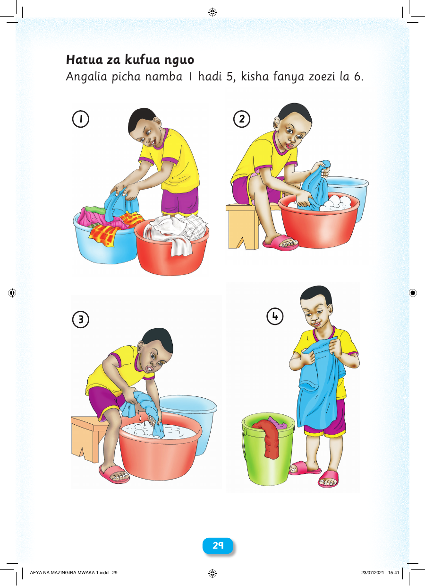

 29 29 Hatua za kufua nguo Angalia picha namba 1 hadi 5, kisha fanya zoezi la 6. 1 2 3 4 AFYA NA MAZINGIRA MWAKA 1.indd 29 23/07/2021 15:41 Hatua za kufua nguo Angalia picha namba 1 hadi 5, kisha fanya zoezi la 6. 1 2 4 3 2299 AFYA NA MAZINGIRA MWAKA 1.indd 29 23/07/2021 15:41